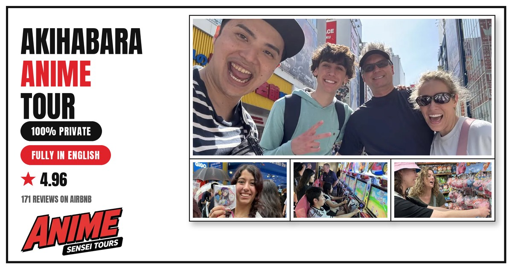
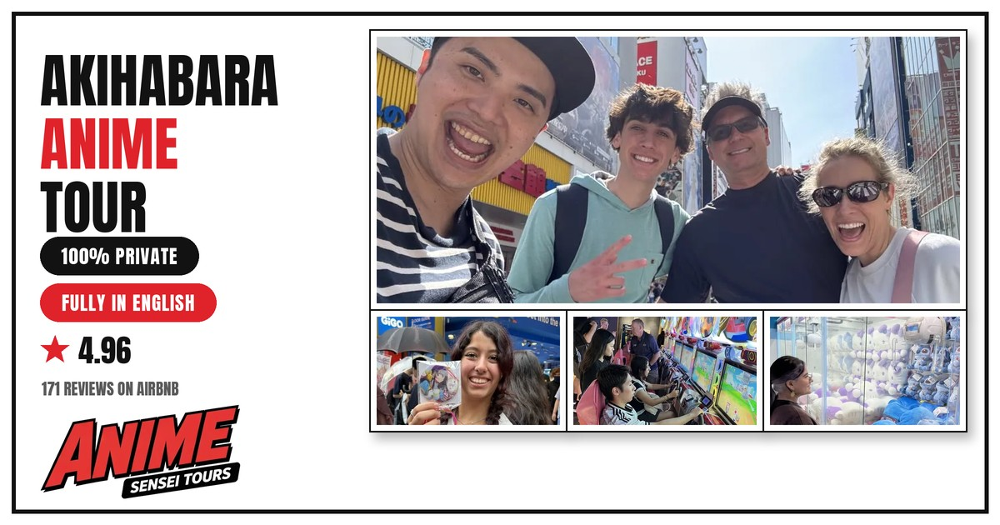
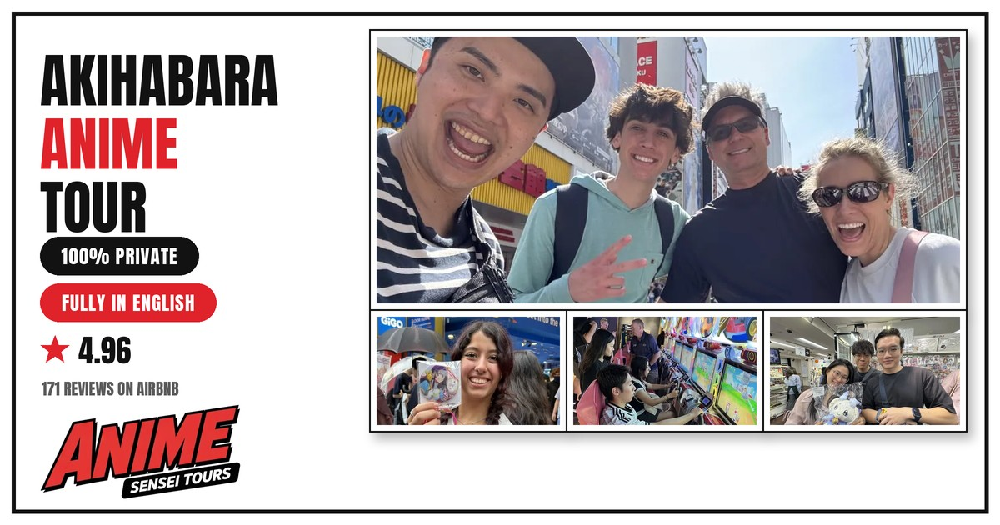
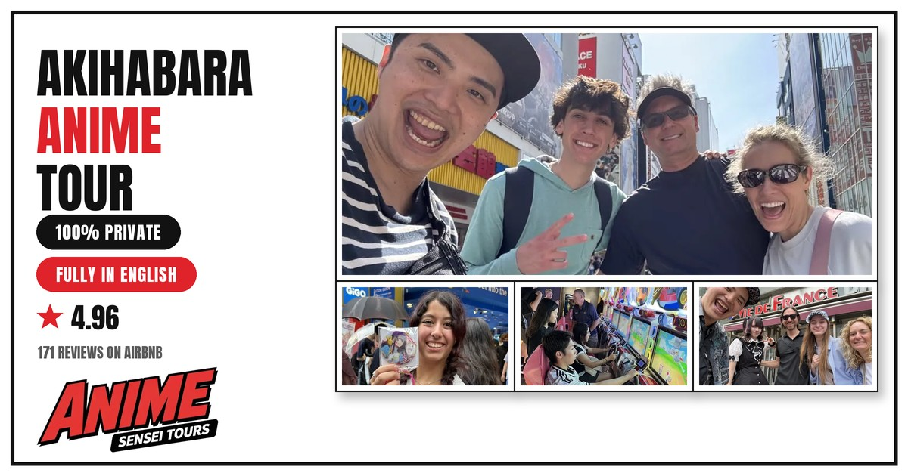
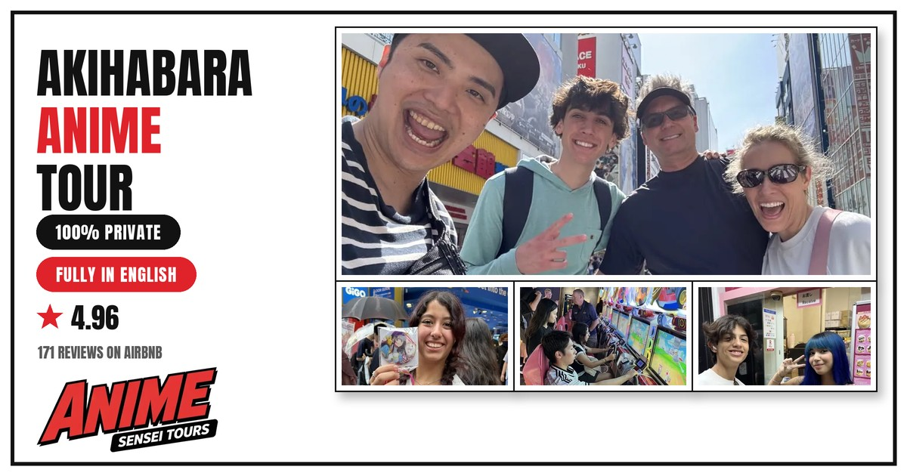

秋葉原アニメツアーLP
OGP画像 案24改 5案
対象ページ：Akihabara Anime Tour（animesenseijp.com/akihabara-tour/）の OGP 画像です。採用された案24（L字グリッド型）を土台に、右下の空白へアニメ・フィギュア系の写真を1枚足してグリッドの隙間をなくし、左カラムの配置を整え直しました。違いは追加した右下の写真だけです。全案 1200×630・実写真使用。本番の og:image はまだ差し替えていません。
番号で選んでください。選ばれた案を本番に設定します。
案24改-1追加写真：カービィのぬいぐるみ壁
右下は星のカービィのぬいぐるみが並ぶグッズ売り場。ピンクの壁がグリッドの差し色になります。

案24改-2追加写真：UFOキャッチャー
右下はクレーンゲームの筐体とぬいぐるみの景品。ゲーセンのレースゲームと並んでアーケード感が強まります。

案24改-3追加写真：フィギュア店でぬいぐるみ
右下はフィギュア店で買ったぬいぐるみを見せるゲスト。お店の棚まで写る買い物体験の1枚です。

案24改-4追加写真：メイドさんと集合写真
右下はメイドさんを囲んだ集合写真。秋葉原らしい文化の要素が入ります。

案24改-5追加写真：青髪ガールとクレープ
右下は青髪のゲストとクレープ。色の鮮やかさで目を引く1枚です。
